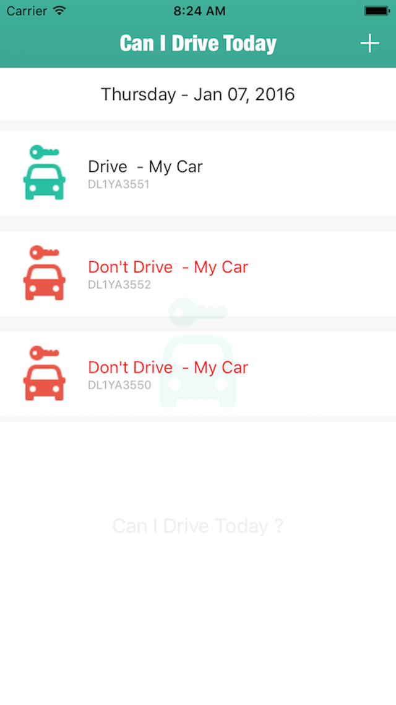

CanIDriveToday
This app lets you decide, if you can drive today , keeping the odd - even traffic rule under consideration
Odd Even Rule - On odd dates only cars ending with an odd license number can drive, on even dates cars ending with an even license number can drive.
This app is mainly targeted for the country India. In New Delhi, odd even rule was launched in 2016 to reduce traffic on the road.
